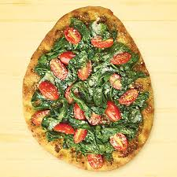

I sine tidligere år vokste Martin opp i Napoli, som er verdenskjent for å være pizzaens hjem. Han ble tidlig lidenskapelig interessert i pizza, og ønsker å trekke den autentiske italienske pizzaen inn i norsk kultur. I følge Martin har man ikke opplevd ordentlig pizza før man har smakt den i Napoli, men han ønsker å kunne tilby beboerne i Trondheim det nærmeste han kan komme den smaksopplevelsen han selv har vokst opp til og elsket hele sitt liv.
